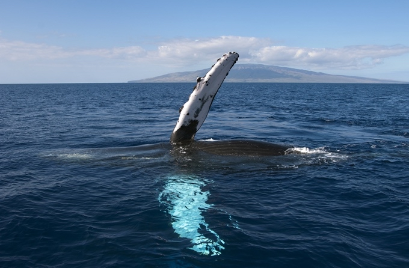
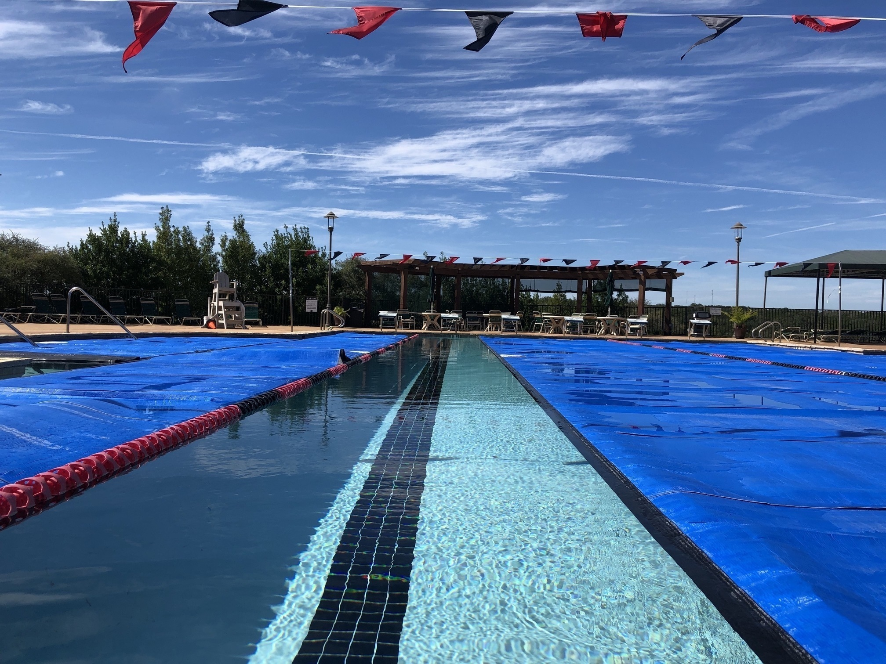
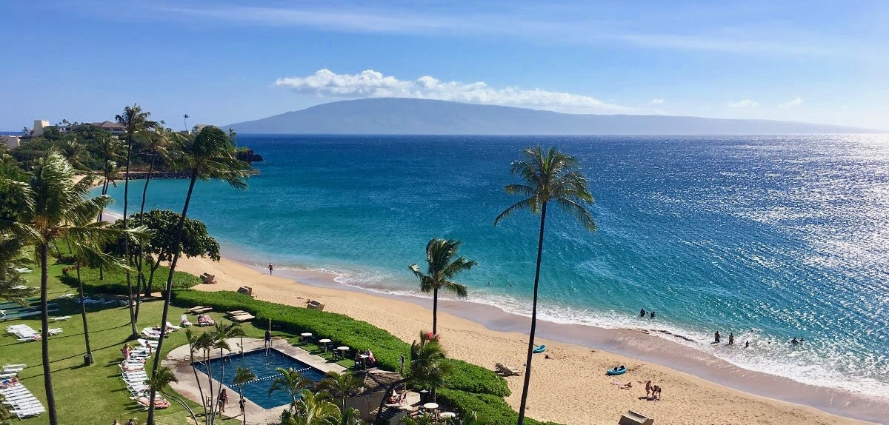

- Andrew Bain
- Home
- Experience
- Interests
- Contact

For Fun!
A few things I enjoy...
A few things I enjoy...
One of my biggest passions. I have always enjoyed and been fascinated with the ocean! Growing up I used to read books about whales and dolphins, and eventually took some Oceanography and Marine Biology courses in university.
I love to learn about the ocean, and eventually accomplished my childhood dream of becoming a (dolphin) Trainer at SeaWorld!

As far back as I can remember, I’ve always been fascinated with computer software, tinkering with gadgets, and learning new technologies. As I became older I realized I wanted to make a career out of software development. It helps me to focus and enjoy creating, and helping others.

I spent most of my early life swimming competitively. I don't swim competitively anymore, but I still enjoy swimming laps from time to time to stay in shape. As a swimmer, I learned to be self-disciplined, to believe in myself and my team, and to be a better person.

As cliché as it sounds, I really DO love to travel! I am grateful that I have been in positions that have allowed me to experience many different cultures, languages, and parts of the world.
